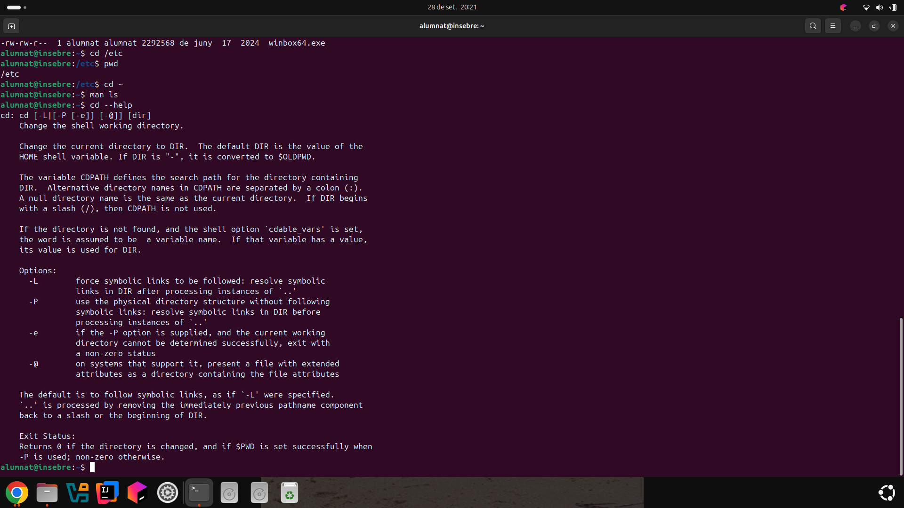
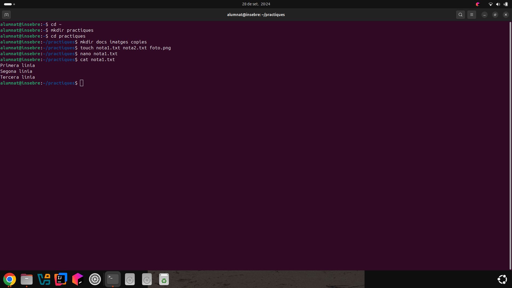
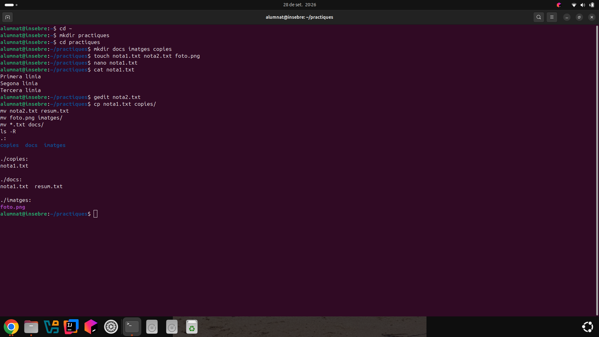
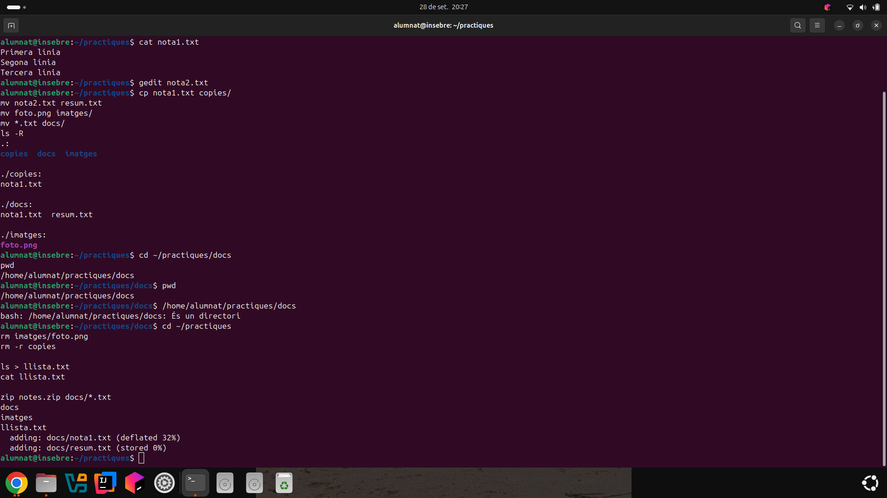
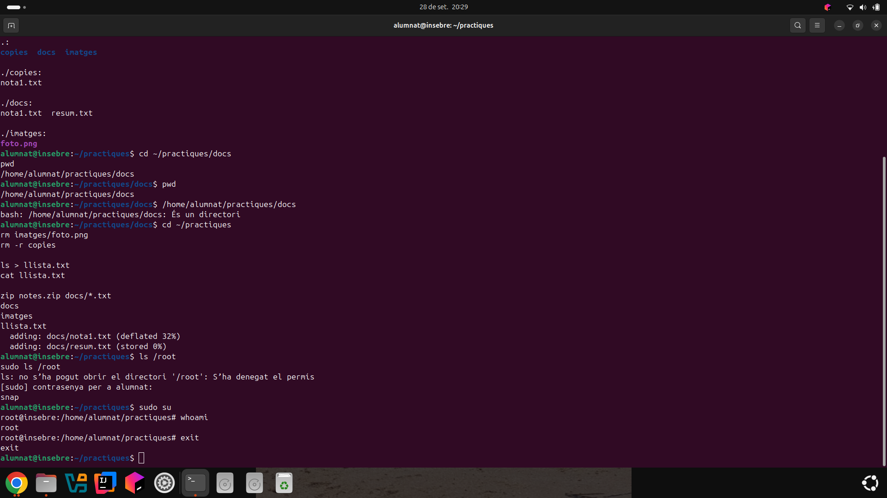
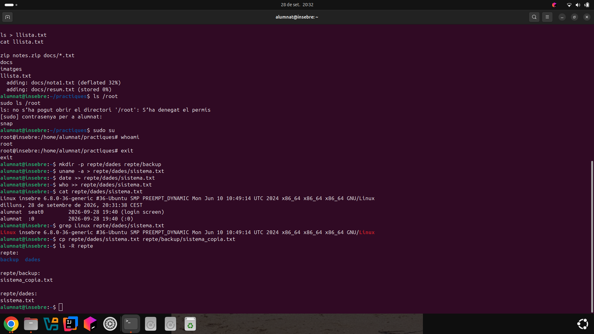
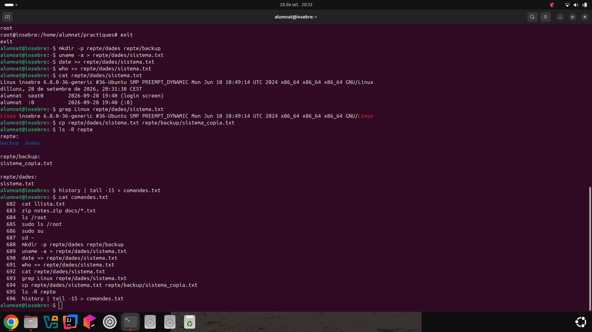

1. Instal·lació SO
1.1 Per començar la pràctica, he creat una màquina virtual amb VirtualBox
i he seleccionat una imatge ISO d'Ubuntu per realitzar la instal·lació
del sistema operatiu.

1.2 Abans d'iniciar la instal·lació, he assignat 8 GB de memòria RAM
a la màquina virtual perquè el sistema funcione de manera més fluida.

1.3 He seleccionat l'opció d'instal·lació manual per poder configurar
les particions del disc.

1.4 He realitzat el particionament manual del disc, creant una partició
de 25 GB per al sistema (/), una partició de 20 GB per a /home
i una partició de 8,68 GB per a /swap.

1.5 Abans d'iniciar la instal·lació, he revisat la configuració i
les particions creades per comprovar que tot estava correcte.

1.6 Una vegada finalitzada la instal·lació, el sistema Ubuntu s'ha iniciat
correctament.
↑ Tornar a l'índex
6. Xarxa bàsica
6.1 Comprovació de la configuració de xarxa
Primer comprovem la configuració actual de la xarxa executant
la següent comanda:
ip a
Aquesta comanda mostra les interfícies de xarxa disponibles i
les adreces IP assignades. En el nostre cas, la interfície activa
és enp0s31f6 i té assignada l'adreça IP
192.168.201.108.

6.2 Configuració d'una IP estàtica
Per configurar una adreça IP estàtica, accedim a la configuració
de xarxa d'Ubuntu i seleccionem el mètode IPv4
Manual.
S'han configurat els següents valors:
- Adreça IP: 192.168.201.108
- Màscara de xarxa: 255.255.255.0
- Passarel·la: 192.168.201.1
- DNS: 8.8.8.8

Després d'aplicar la configuració, comprovem des del terminal
que l'adreça IP s'ha configurat correctament:
ip a
Finalment, comprovem la comunicació amb la porta d'enllaç
i la connexió a Internet:
ping -c 4 192.168.201.1
ping -c 4 google.com
Les dues proves retornen un 0% de pèrdua de paquets,
confirmant que la configuració de xarxa funciona correctament.

6.3 Verificació de la connectivitat
Una vegada configurada la xarxa, comprovem que existeix
connectivitat tant amb la xarxa local com amb Internet.
Per fer aquestes comprovacions utilitzem la comanda
ping.
Ping a la porta d'enllaç
Primer comprovem la comunicació amb la porta d'enllaç
192.168.201.1 executant:
ping -c 4 192.168.201.1
L'opció -c 4 indica que s'envien quatre paquets.
El resultat mostra que s'han enviat 4 paquets i s'han rebut
els 4, amb un 0% de pèrdua de paquets.
Per tant, la comunicació amb la xarxa local funciona correctament.

Ping a Google
A continuació comprovem la connexió a Internet i la resolució
de noms DNS fent un ping al domini de Google:
ping -c 4 google.com
El sistema resol correctament el domini google.com
i rep resposta als quatre paquets enviats, amb un
0% de pèrdua de paquets.
Això confirma que tenim connexió a Internet i que el servei
de resolució DNS funciona correctament.

↑ Tornar a l'índex
7. Comandes generals
En aquesta pràctica he treballat amb diferents comandes de Linux
des del terminal. He practicat la navegació entre directoris,
la creació i gestió de fitxers i carpetes, la compressió de fitxers,
els permisos d'administrador, la redirecció de la sortida de comandes
i l'ús de l'historial.
7.1 Comandes bàsiques i navegació
Primer he utilitzat comandes bàsiques per saber en quin directori
em trobo, veure el seu contingut i moure'm entre diferents directoris.
També he consultat el manual de Linux per obtenir informació sobre
les comandes.
pwd
ls
ls -la
cd /etc
pwd
cd ~
man ls
cp --help
clear

7.2 Creació de carpetes i fitxers
He creat el directori practiques i dins d'aquest
he creat les carpetes docs, imatges
i copies. També he creat diferents fitxers amb
la comanda touch.
mkdir practiques
cd practiques
mkdir docs imatges copies
touch nota1.txt nota2.txt foto.png
Després he editat el fitxer nota1.txt amb Nano,
hi he escrit tres línies i he utilitzat cat per
comprovar-ne el contingut.
nano nota1.txt
cat nota1.txt

7.3 Copiar, reanomenar i moure fitxers
A continuació he utilitzat cp per copiar un fitxer
i mv per reanomenar i moure fitxers entre directoris.
També he utilitzat *.txt per seleccionar tots els
fitxers de text.
gedit nota2.txt
cp nota1.txt copies/
mv nota2.txt resum.txt
mv foto.png imatges/
mv *.txt docs/
ls -R
Amb ls -R he comprovat l'estructura resultant i
la ubicació dels diferents fitxers.

7.4 Rutes, eliminació i compressió
He practicat la navegació utilitzant rutes i he comprovat la
ruta absoluta del directori actual amb pwd.
També he eliminat un fitxer i un directori.
cd ~/practiques/docs
pwd
cd ~/practiques
rm imatges/foto.png
rm -r copies
Després he utilitzat l'operador > per guardar
el resultat de la comanda ls dins d'un fitxer.
Finalment, he comprimit els fitxers de text del directori
docs en un arxiu ZIP.
ls > llista.txt
cat llista.txt
zip notes.zip docs/*.txt

7.5 Permisos i usuari root
He intentat accedir al directori /root com a
usuari normal i el sistema ha denegat l'accés per falta de
permisos. Després he repetit l'operació utilitzant
sudo.
ls /root
sudo ls /root
També he utilitzat sudo su per passar temporalment
a l'usuari root. Amb whoami he comprovat que
l'usuari actual era root i finalment he tornat al meu usuari
normal amb exit.
sudo su
whoami
exit

7.6 Informació del sistema i redireccions
He creat els directoris repte/dades i
repte/backup. Després he guardat informació
del sistema dins del fitxer sistema.txt.
mkdir -p repte/dades repte/backup
uname -a > repte/dades/sistema.txt
date >> repte/dades/sistema.txt
who >> repte/dades/sistema.txt
L'operador > crea o substitueix el contingut
del fitxer, mentre que >> afegeix informació
al final sense eliminar el contingut anterior.
He visualitzat el resultat amb cat, he utilitzat
grep per buscar la paraula Linux i finalment he
creat una còpia del fitxer dins del directori de backup.
cat repte/dades/sistema.txt
grep Linux repte/dades/sistema.txt
cp repte/dades/sistema.txt repte/backup/sistema_copia.txt
ls -R repte

7.7 Historial de comandes
Per acabar la pràctica he utilitzat l'historial del terminal
per guardar les últimes 15 comandes executades dins del fitxer
comandes.txt.
history | tail -15 > comandes.txt
cat comandes.txt
Amb cat he comprovat que les últimes 15 comandes
s'han guardat correctament al fitxer.

7.8 Tancament del terminal
Finalment, he utilitzat la comanda exit per
tancar la sessió del terminal.
exit
↑ Tornar a l'índex